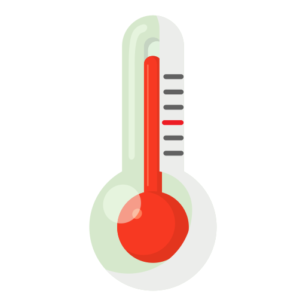

🧪 Objets à récupérer
Température
Collectez cet objet pour réguler la température du produit et éviter son altération.
La bar de température monte lentement. Mais le fait de récupérer un objet température permet de ralentir sa progression.
Viscosité

Un composant clé qui peut affecter la consistance et la conservation du produit.
La bar de la viscosité monte plus vite que celle de la temperature, mais récuperer un objet viscosité la fait baisser grandement